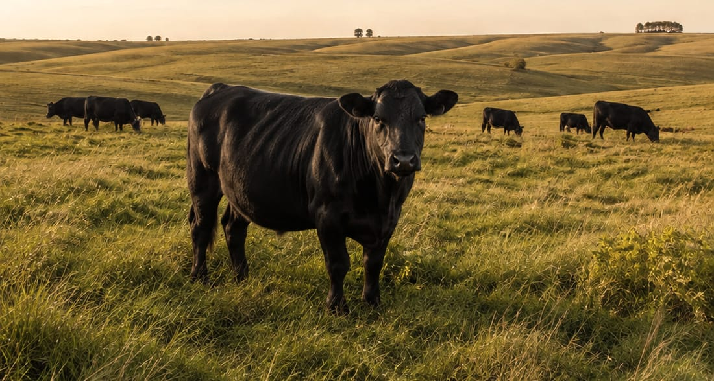
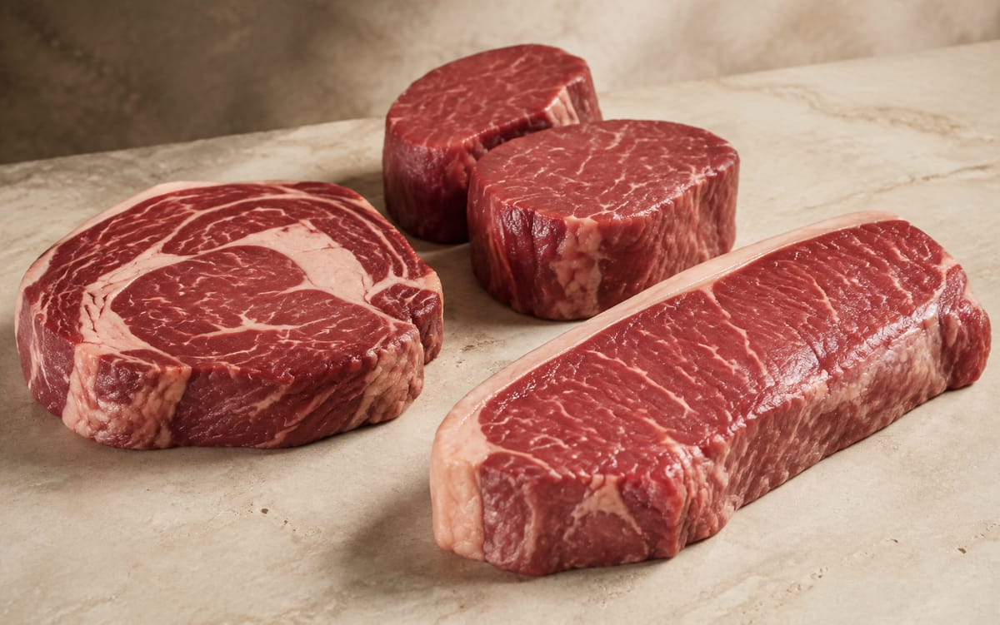
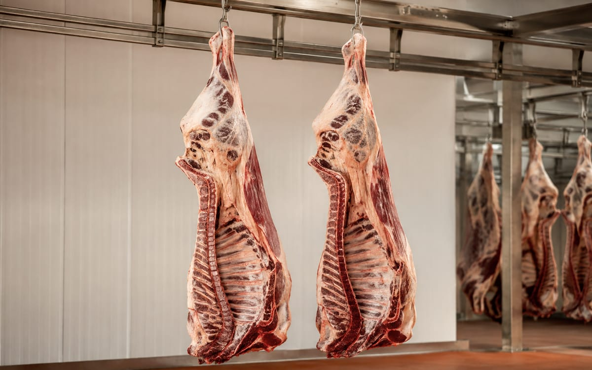

Rindfleisch aus uruguayischer Weidehaltung, nach Spezifikation beschafft.
Kunz Sourcing bearbeitet Rindfleischanfragen europäischer Importeure, Großhändler und Verarbeiter. Teilstücke, Verpackung und Bestimmungsort werden je Anfrage vereinbart, die Ware stammt aus EU-zugelassenen uruguayischen Exportbetrieben, und jede Produktangabe ist durch die Unterlagen des Betriebs belegt.

- Produkt
- Rindfleisch, gekühlt oder gefroren; vakuumverpackte Teilstücke oder lose im Karton
- Herkunft
- Rinder aus Weidehaltung, einzeln rückverfolgbar, Uruguay
- Bezug
- EU-zugelassene uruguayische Exportbetriebe
- Abnehmer
- Importeure, Großhändler, Gastronomie-Großhandel, Verarbeiter
- Mengen
- Volle Kühlcontainerladungen (Reefer), 20 und 40 Fuß
- Nächster Schritt
- Senden Sie Teilstücke, Menge und Bestimmungsort; wir bestätigen Betrieb und Dokumente vor dem Angebot
Kunz Sourcing nimmt Rindfleischanfragen bereits entgegen und baut die Belieferung mit EU-zugelassenen uruguayischen Betrieben auf. Bei Lieferzeiten sind wir offen: Betrieb, Spezifikation und Dokumentation werden für jede Anfrage vor dem Angebot bestätigt.
Uruguay als Herkunft für Rindfleisch
Weide, Rückverfolgbarkeit und eine auf Export ausgerichtete Branche.
Uruguay exportiert den Großteil seines Rindfleischs, und die Systeme hinter diesem Handel sind öffentlich: nationale Rückverfolgbarkeit, ministeriell kontrollierte Betriebe und ein anerkannter Tiergesundheitsstatus.
Kunz Sourcing ist weder Schlachtbetrieb noch eingetragener Exporteur. Rindfleisch wird von EU-zugelassenen Betrieben unter deren veterinärrechtlicher Zertifizierung exportiert; wir beschaffen, spezifizieren, prüfen die Dokumentation und koordinieren die kaufmännische Seite für den Käufer.
Aufgezogen auf der Weide
Die Rinder weiden in gemäßigtem Klima ganzjährig auf Naturgrasland. Der Einsatz hormoneller Wachstumsförderer ist in Uruguay verboten.
Einzeln rückverfolgbar
Jedes Rind trägt eine individuelle Kennzeichnung und ist vom Betrieb bis zur Schlachtung im nationalen Rückverfolgbarkeitssystem (SNIG) registriert.
Kontrollierte, gelistete Betriebe
Exportbetriebe werden vom Ministerium für Viehzucht, Landwirtschaft und Fischerei (MGAP) kontrolliert und für ihre Zielmärkte gelistet, einschließlich der Europäischen Union.
Anerkannter Gesundheitsstatus
Uruguay ist von der WOAH als frei von Maul- und Klauenseuche mit Impfung anerkannt – die Grundlage für den Zugang zu anspruchsvollen Märkten.
Was beschafft werden kann
Teilstücke und Spezifikationen, je Anfrage vereinbart.
Einen Katalog gibt es nicht. Wir arbeiten mit Ihrer Spezifikation und klären mit dem Betrieb, was für Ihren Markt produziert, verpackt und zertifiziert werden kann.

01 · Premium-Teilstücke
Teilstücke aus Rücken und Keule
Für Einzelhandel, Gastronomie und Feinkosthandel: Teilstücke wie Filet (lomo), Roastbeef (bife de chorizo), Rib Eye und Hüfte. Vakuumverpackt und im Karton, gekühlt oder gefroren, nach Ihren Vorgaben etikettiert.
- Teilstücke
- Nach Spezifikation, z. B. Filet, Roastbeef, Rib Eye, Hüfte
- Aufmachung
- Vakuumverpackt, im Karton
- Zustand
- Gekühlt oder gefroren
- Abnehmer
- Importeure, Gastronomie, Feinkostgroßhandel
- Dokumentation
- Betriebsspezifikation und Gesundheitszeugnis je Partie
- Mengen
- Volle Kühlcontainerladungen

02 · Verarbeitungsteilstücke und Industrieware
Vorderviertel, Abschnitte, Verarbeitungsfleisch
Für die verarbeitende Industrie: Teilstücke aus dem Vorderviertel, Abschnitte und Verarbeitungsfleisch lose im Karton nach Spezifikation. Ganze Schlachtkörper oder Viertel nur, soweit für Herkunft und Bestimmungsland zulässig und betrieblich umsetzbar.
- Teilstücke
- Vorderviertel, Abschnitte, Verarbeitungsfleisch
- Aufmachung
- Lose im Karton, nach Spezifikation
- Zustand
- Gefroren oder gekühlt, nach Vereinbarung
- Abnehmer
- Fleischverarbeiter, industrielle Abnehmer
- Dokumentation
- Betriebsspezifikation und Gesundheitszeugnis je Partie
- Mengen
- Volle Kühlcontainerladungen
Qualität & Dokumentation
Angaben folgen den Unterlagen des Betriebs.
Aussagen zu Fütterung, Tiergesundheit, Rückständen und Zertifizierungen treffen wir ausschließlich auf Grundlage der Unterlagen des liefernden Betriebs für das konkrete Produkt und die konkrete Partie.
Vom Betrieb
Mit dem Angebot für das konkrete Produkt bereitgestellt.
- Exportzulassung und Listung für den Zielmarkt
- Produktspezifikation: Teilstücke, Zuschnitt, Gewichtsklassen, Verpackung
- Produktions- und Verpackungsdatum, Haltbarkeit, Lagertemperatur
- Partiekennzeichnung und Etikettierung
Amtliche Dokumente
Von den uruguayischen Behörden für die Sendung ausgestellt.
- Veterinärgesundheitszeugnis des MGAP für das Zielland
- Rückverfolgbarkeitsdaten aus dem nationalen Tierregister (SNIG)
- Ursprungszeugnis, soweit vom Zielland verlangt
Von Kunz Sourcing
Vor dem Angebot, nicht erst nach Vertragsschluss.
- Prüfung der Dokumentation gegen Ihre Spezifikation und die Marktanforderungen
- Abstimmung von Verpackung, Etikettierung und Zustand mit dem Betrieb
- Handelsrechnung, Packliste und Konnossement mit dem Zollagenten
- Muster oder Betriebsbesuche auf Anfrage
Ablauf einer Rindfleischanfrage
Fünf Schritte von Ihrer Spezifikation bis zum beladenen Kühlcontainer.
Dieselbe Reihenfolge wie bei jeder Kategorie von Kunz Sourcing, ergänzt um die veterinärrechtliche Zertifizierung des Betriebs und die Kühlkette.
- 01
Bedarf
Teilstücke, Menge, gekühlt oder gefroren, Verpackung, Bestimmungsort und Lieferzeitraum.
- 02
Betriebsauswahl
Wir ermitteln einen EU-zugelassenen Betrieb, der die Spezifikation produzieren kann, und bestätigen seine Listung für Ihren Markt.
- 03
Spezifikation und Dokumente
Spezifikationsblatt, Zertifikatsanforderungen und Etikettierung werden abgestimmt, bevor ein Angebot entsteht.
- 04
Kaufmännische Abwicklung
Angebot, Vertrag und Zahlungsbedingungen je Geschäft; Anzahlung und Restzahlung nach Vereinbarung.
- 05
Produktion und Export
Produktion, Veterinärzertifizierung, Verladung und Kühltransport werden mit Betrieb, Zollagent und Spediteur koordiniert.
Die Importabfertigung im Bestimmungsland übernimmt der Käufer oder sein beauftragter Importpartner. Die Marktzulassung des Betriebs für Ihr Land wird vor Vertragsschluss bestätigt.
Export & Logistik
Kühlcontainerladungen ab dem Hafen Montevideo.
Rindfleisch wird in vollen Kühlcontainerladungen (Reefer) verschifft, die Temperatur wird je Produkt eingestellt. Fracht, Versicherung und Dokumente koordinieren wir mit zugelassenen uruguayischen Partnern.
- Container
- 20- und 40-Fuß-Reefer, volle Containerladungen
- Ladegewicht
- Abhängig von Teilstücken, Verpackung und Zustand; ein 40-Fuß-Reefer fasst in der Regel rund 20 t Rindfleisch im Karton
- Temperatur
- Gekühlt oder gefroren, eingestellt je Produkt und Haltbarkeit
- Lieferbedingungen
- Standard FOB Montevideo · CIF auf Anfrage
- Transit nach Europa
- Rund vier bis sechs Wochen auf See, je nach Route
- Importabfertigung
- Durch den Käufer oder seinen Importpartner

Produktion & Zertifizierung
EU-zugelassener Betrieb, Uruguay; Veterinärzertifikat des MGAP
Verladung
Hafen Montevideo, Kühlcontainer, Temperatur eingestellt
Seefracht
Rund vier bis sechs Wochen, Route mit dem Spediteur bestätigt
Ankunft
Europäischer Bestimmungshafen
Zoll & Übergabe
Importabfertigung durch den Importeur; Übergabe der Originaldokumente
So entsteht der Preis
Angebot je Geschäft, nicht nach Liste.
Rindfleischpreise werden zum Zeitpunkt der Anfrage anhand des Angebots des Betriebs bestätigt. Vier Faktoren bewegen den Preis stärker als alles andere.
Teilstücke und Spezifikation
Rückenstücke werden anders bepreist als Vorderviertel und Verarbeitungsfleisch; Zuschnitt und Gewichtsklassen spielen eine Rolle.
Gekühlt oder gefroren
Zustand, Verpackung und Anforderungen an die Haltbarkeit verändern sowohl den Preis des Betriebs als auch die Logistik.
Menge und Kontinuität
Volle 40-Fuß-Ladungen und Programmmengen werden anders kalkuliert als ein einzelner Container.
Lieferbedingung
FOB Montevideo oder CIF: Fracht, Versicherung und der Tagesmarkt fließen in den Preis ein.
Keine öffentlichen Preislisten und keine Mindestmengen auf dieser Website. Konditionen besprechen wir mit jedem Einkäufer individuell.
Rindfleischanfrage
Nennen Sie uns Teilstücke, Menge und Bestimmungsort.
Vor dem Angebot bestätigen wir Betrieb, Spezifikation und Dokumentation für Ihren Markt; innerhalb eines Werktags erhalten Sie eine Einschätzung, was realistisch ist, einschließlich Lieferzeiten.
- Stanley@kunzsourcing.com
- +49 6344 9269681Geschäftskonto, Antworten aus Uruguay
- Büro
- Kunz Sourcing · Kunz Global
Kiyú / Libertad, 80100 San José, Uruguay - Sprachen
- Englisch · Deutsch · Spanisch